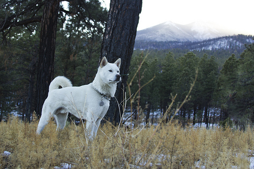

Kishu Ken
The Kishu Ken is known for being a 'silent' breed and will rarely bark.
- Origin: Japan
- Average Size: 17-22", 30-60lb
- Average Lifespan: 11-13 years
- Breed Group: Hunting, Working
The Kishu Ken is considered a rare breed of dog, and has been a protected species in Japan since 1934. There are less than 10,000 Kishu Ken in the world. The Kishu Ken has been bred for hunting small game for over 3000 years.